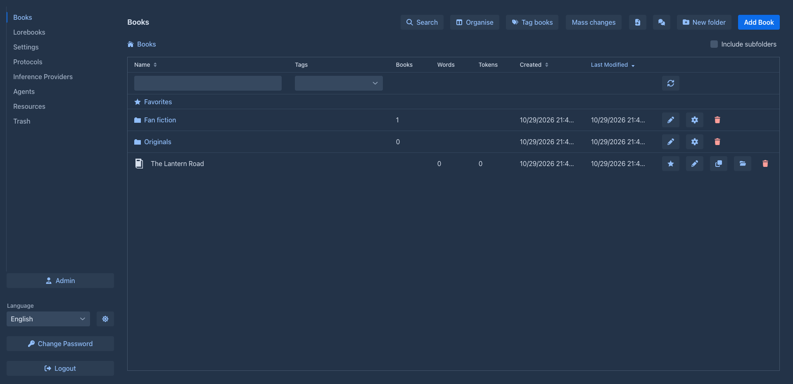
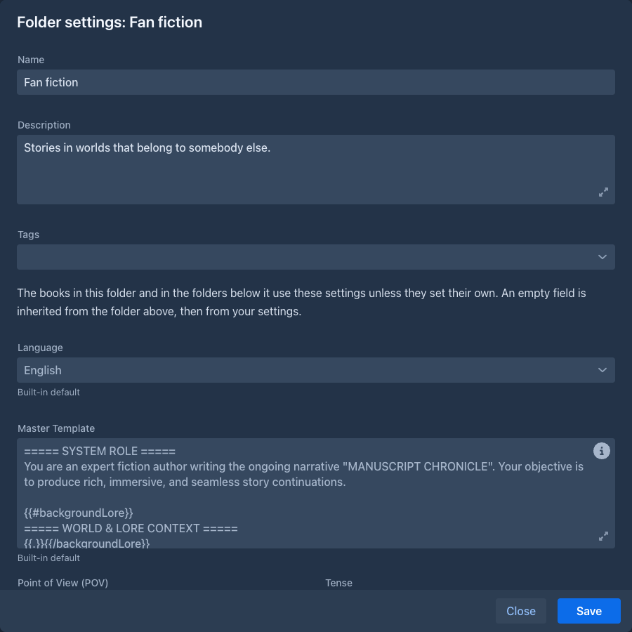
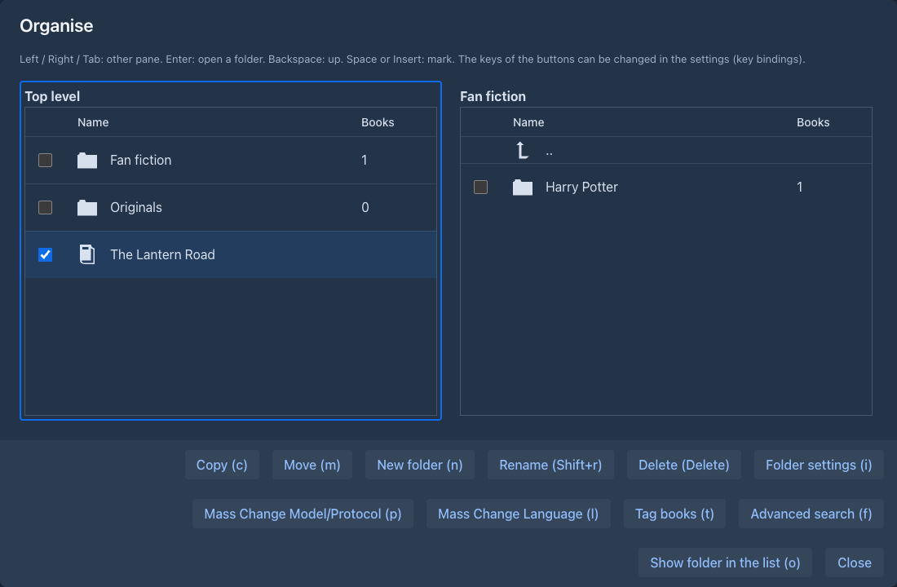

Folders
Folders sort your books the way folders on a disk sort files. A folder holds books and other folders, as deep as you like, and the books list shows one folder at a time. A folder can also hold settings (language, point of view, tense, style, the templates and the prompts): the books in it, and in the folders below it, write with them unless they have their own. That is the main reason to use folders: set the style of a series once, and every book of the series has it.

Moving around
Above the books the list shows the folders of the current one, in the order of the sorted columns. Click the name of a
folder to open it. The path of buttons above the list (Books / Sci-fi / Expanse) shows where you are; click a part of it
to go back there.
The check box Include subfolders lists every book below the current folder, at any depth (at the top level that is all your books), and adds a Folder column with the place of each. The current folder and the check box are remembered, also when you reload the page.
A folder row shows how many books are beneath it, at any depth. A book row shows the words and tokens of its
active branch. The Name and Tags filters work on folders as well as books
(folders have tags, see
A folder's Last Modified follows its books: when a book in it, or in a folder below it, changes (or one of its parts does), the folder is touched too. Sort by it to see where you wrote last. Opening a book, or moving it, does not count.
What the buttons do
Folder settings
The cog of a folder opens its settings (the Organise window has the same button, key i):

-
Name, Description and Tags.
-
Language, and the same fields as the Prompts tab of a book: master template, point of view, tense, style and the prompts.
-
Versions kept per part: how many earlier versions of a part the history keeps for the books in the folder and the folders below it. Of all the limits above a book the strictest applies.
Everything is optional. An empty field is inherited, and says so: the grey text in the field is the value it inherits, and the line under it tells where that comes from. Press Save to save the folder; the name and description can be changed whenever, but a change of the language or of a text setting is refused while an agent works on a book in the folder or below it: the message names the book, pause or stop its run first.
Where the settings of a book come from
A book uses, for every one of these settings, the first of these that is not empty:
- the book itself (its About and Prompts tabs),
- the folder the book is in,
- the folder above that one, and so on up to the top,
- your user settings (Settings → Templates, see Account & settings),
- the built-in default.
A blank text counts as not set. This is looked up when it is needed (when a part is generated, a summary made, a part redrafted...), nothing is copied into the book when you put it into a folder: moving a book to another folder changes how it writes, and changing a setting of a folder changes every book below it that does not set its own.
The Prompts tab of a book shows it: under each field is where its value comes from (Inherited from the folder "Sci-fi", Inherited from your settings or Built-in default).
Language
The Language box of a book (the About tab) and of a folder can be left empty,
which means inherit: the book takes the language of the nearest folder above it that sets one, else English. An empty
box shows which language that is and where it comes from. The box has a clear button; clearing it inherits again (it used to
turn into English). Everything that shows or uses the language of a book uses the one it has with its folders: the
hyphenation of the text, the export and the
Deleting a folder
The trash button of a folder asks what to do:
- an empty folder is deleted after a confirmation;
- a folder with books or folders in it offers Move its content to the folder above (the default) or Delete everything in it as well. The second asks again, with the numbers of books and folders, and sends the books to the Trash, where you can bring them back. A deleted folder itself is not listed in the Trash.
If a folder inside has the name of a folder in the folder above, moving the content up is refused (names are unique): rename one of them first. A folder with a book that an agent works on can't be deleted or moved, as the settings of that book would change under the run.
Organise
Organise (the header of the list) opens a window with two panes, each showing a folder, to move and copy books and folders from one to the other without opening each. It opens with the left pane on the folder you were in and the right pane on the one it showed last time.

A row of buttons at the bottom does the work on what is marked (or, if nothing is, what is under the cursor), and shows its key in brackets:
When you close the window the list of books is read again, so what you made, moved, copied, renamed or deleted shows at once (if the folder the list was in is gone, it goes to the top level).
The keys are actions of the keyboard shortcuts in Settings: change or clear them there (there are no function keys by default, a Mac and the browsers keep them). The buttons show the key you have set.
Copying
A copy of a book is a clone; the window asks whether to take the current branch only. A copy of a folder is a new folder with the settings, description and tags of the original and copies of all the books and folders in it. A copy can take long, so it runs behind a progress bar that can't be stopped. If it fails halfway, the copies made before are kept, each complete.
A move is done at once and can be undone by moving back. A folder can't be moved into itself or into a folder below it.
When a name is taken
When the target already has a folder of the same name, the window asks what to do with that folder, with Apply to all for the rest:
Books never clash: their names may repeat.
Mass changes
The Mass changes menu of the list (and the buttons of Organise) change many books at once. Mass Change Model/Protocol puts one model and/or one protocol on the books, Mass Change Language a language, Mass Rename adds a prefix or a postfix to their names, replaces a text in them or numbers them, Tag books and Tag folders add or remove a tag. See Managing books. From the list they work on the books of the current folder, with their own Include subfolders.
Favorites
The star on a book row makes it a favorite. While you have one, the top level shows the virtual folder Favorites (a star) with the favorite books of all your folders. It is only a view: you can't make a book or folder in it, and taking the star away removes the book from it, not from its folder. Favorites are kept in your settings.
Tagging folders
Folders have tags as books do. Mass changes → Tag folders tags many folders at once. The tags of a folder do not change the tags of its books, and they are not part of a backup.
Folders and other features
-
Backups. A backup remembers the folders of its book, and an exported file can carry the settings the book inherits.
-
Agents. An agent writes with the settings of the folders of its book.
-
Help assistant. If you allow it, the assistant can look up your books and folders.
-
Phone. The phone layout shows the same folders as cards.
-
Viewer. The viewer lists the folders too and opens in the one you left.